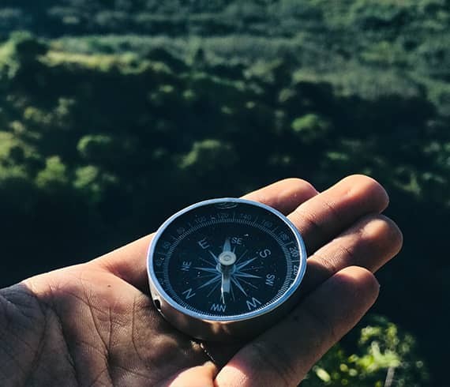

Популярные направления
Когда Горный Алтай называют второй Швейцарией, алтайцы отвечают, что нужно еще разобраться, кто тут второй. Чтобы расставить все по местам, отправляйтесь в путешествие по Чуйскому тракту , по Горному Алтаю до самой Монголии. 962 км — полный маршрут Новосибирск—Новоалтайск—Бийск—Майма —государственная граница с Монголией.
